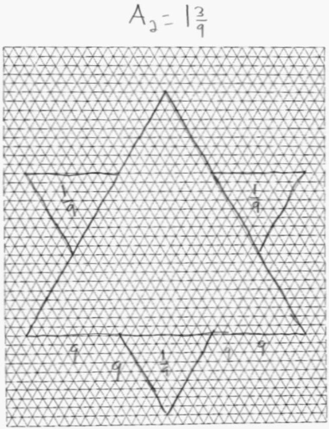
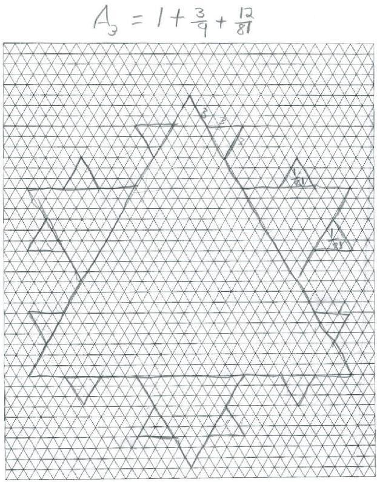
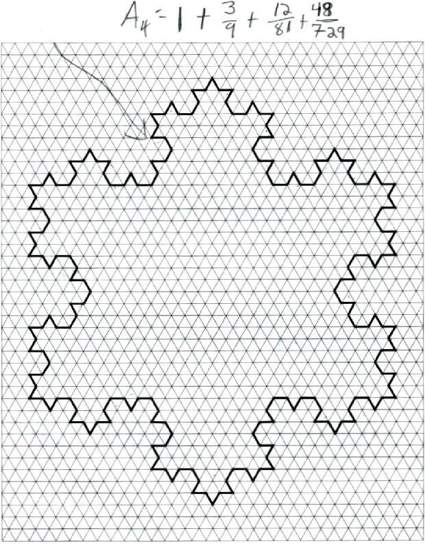
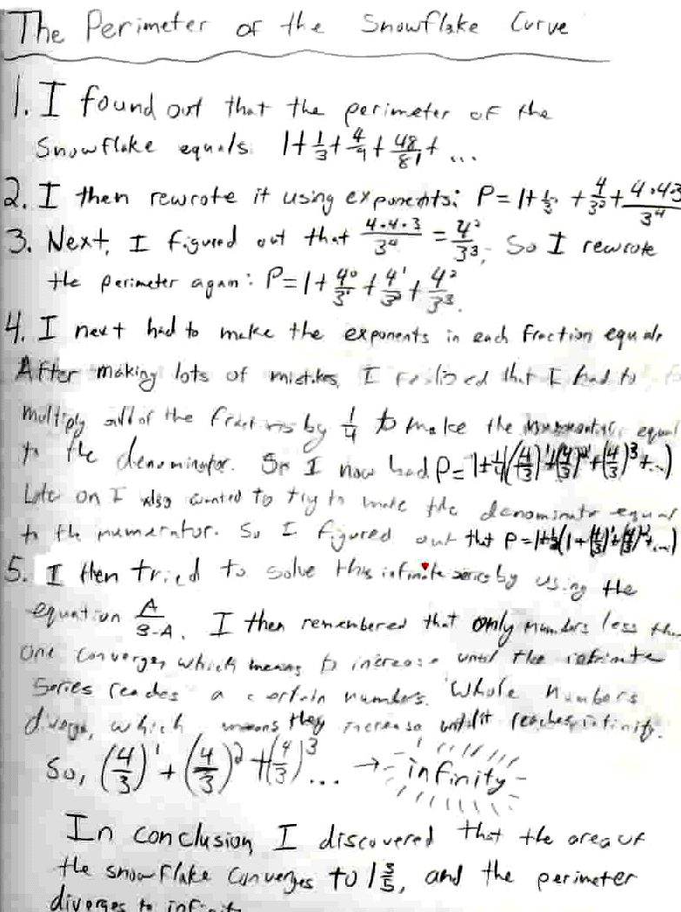

Emily, a 7th grader, finds the area
& perimeter of the snowflake curve
Emily's 4 Snowflake Diagrams



Emily at home, found the area of the first 4 snowflake curves above. We called the area of #1, 1. Then she wrote the others as an infinite sequence, each one the partial sum of an infinite series.
A1 = 1
A2 = 1 + 3/9
A3 = 1 + 3/9 +12/81, and
A4 = 1+3/9+12/81 + 48/729 + �
Don helped her write this infinite series, in the form  . In her
notebook, Emily found the work she did on infinite series a couple of months
earlier, when she found
. In her
notebook, Emily found the work she did on infinite series a couple of months
earlier, when she found
 =
A/(B-A). Then Don asked her to write down herself,
what they had done the week before. Emily wrote the following, Don added the
typed notes:
=
A/(B-A). Then Don asked her to write down herself,
what they had done the week before. Emily wrote the following, Don added the
typed notes:
The main question Emily had was in factoring out the 3. When she wrote it as 3/1, then she understood.
So the infinite sequence, and series, for the area of the snowflake is convergent and goes to 1 3/5, which is finite.
Great job, Emily!!!
Now Don asked if she would work on finding the perimeter; Emily did this below:

Great job Emily!
[The big problem is getting students, and myself, to write down the mistakes we make in solving a problem. I think we make lots of mistakes, but when we write things down, we tend to write the results only. People reading other's works tend to think "that was easy" or "how did they do that?", when if fact we struggle with things all the time.]
To other students who come from out of town to study with Don